Описание раздела Отчеты – Журнал продаж.
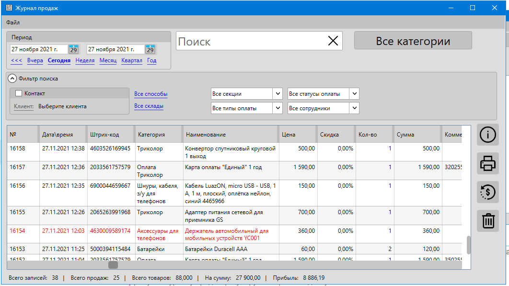
Журнал продаж отображает историю всех сделанных продаж. Позволяет просматривать детали по каждой из них, выполнять возвраты, печатать документы.
Информация
Просмотр журнала продаж регулируется правами доступа.
Видео-урок
Открыть журнал продаж можно несколькими способами:
- Из меню главной формы: Отчеты – Журнал продаж
- Из сводного отчета
- Из отчета продавца
- Из карточки контакта (покупателя)
Меню
Описание пунктов меню журнала продаж.
Файл
- Сохранить как…– сохранение журнала продаж в Excel или CSV формат
- Печатать – печать информации, отображаемой журналом продаж
Основной фильтр
Основные параметры фильтрации в журнале продаж
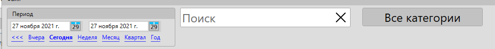
Период
Фильтр по дате продажи. В результат поиска попадут продажи, сделанные в промежуток между указанными датами.
Внимание
Обратите внимание, что при фильтрации по дате учитывается значение опции "Время начала смены", доступной в настройках программы.
Поиск
Поле поиска позволяет найти товар по части названия или продажу по номеру документа.
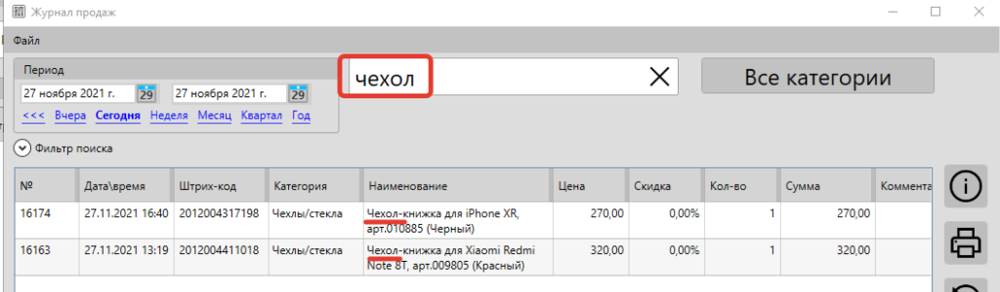
Категории
Фильтрация журнала продаж по категории товаров.
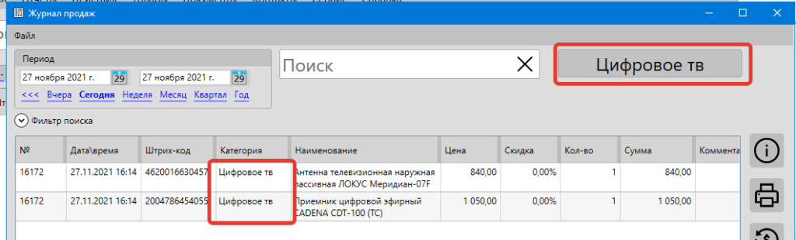
Дополнительный фильтр
Дополнительные параметры фильтрации в журнале продаж. Нажмите на "Фильтр поиска", чтобы раскрыть параметры фильтрации
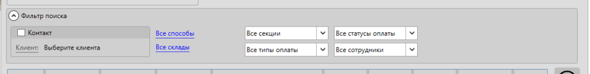
Контакт
Фильтрация журнала продаж по покупателю. В результатах поиска будут отображены продажи, сделанные выбранным покупателем.
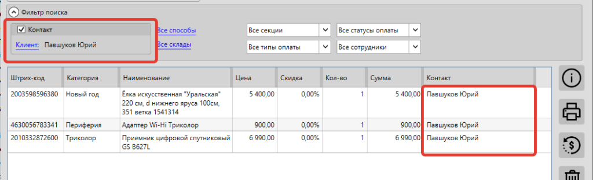
Способы оплаты
Фильтрация журнала продаж по способам оплаты. Например, наличные, карта, баллы. В результатах поиска будут отображены продажи, которые содержат платеж хотя бы одним из выбранных способов. Т.е. продажа, оплаченная и картой и наличными будет отображены и при выборе "Карта" и при выборе "Наличными".
Можно выбрать одновременно несколько значений.
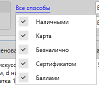
Видео-урок
Склады
Фильтрация журнала продаж по складу. В результатах поиска будут отображены продажи, которые были выполнены для товаров с определенного склада.
Можно выбрать одновременно несколько значений.
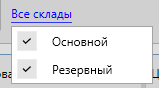
Секции
Фильтрация журнала продаж по секции. В результатах поиска будут отображены продажи, которые были выполнены на определенной секции (рабочем месте)
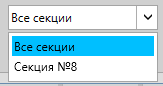
Типы оплаты
Фильтрация журнала продаж по типу оплаты. Доступны варианты:
- Все типы оплаты – все продажи
- Фискально – продажи, для которых был напечатан фискальный чек
- Нефискально – продажи, для которых фискальный чек не был напечатан
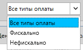
Статусы оплаты
Фильтрация журнала продаж по статусу оплаты. Доступны варианты:
- Неоплаченные – продажи, которые были оформлены в долг и по ним не было платежей
- Оплаченные частично – продажи, которые были оформлены в долг и были частично оплачены
- Оплаченные полностью – продажи, которые были оплачены полностью или задолженность по ним закрыта
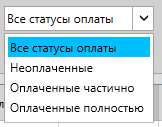
Видео-урок
Сотрудники
Фильтрация журнала продаж по сотруднику. В результатах поиска будут отображены продажи, которые были привязаны к конкретному сотруднику.
Для закрепления продаж за сотрудниками должна быть включена соответствующая опция в настройках программы.
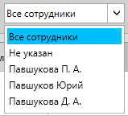
Список продаж
Список, в котором отображаются проданные товары.
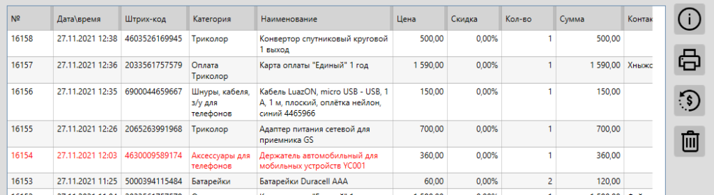
Красным цветом выделены те продажи, по которым был возврат хотя бы одного товара.
Карточка продажи
Карточка продажи, в которой отображается подробная информация по выбранной продаже: товары, платежи, возвраты и т.п.
Печать
При нажатии кнопки "Печатать" программа предложит на выбор печать документа (накладная, товарный чек, счет) или чека (нефискальный дубликат чека)
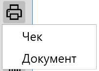
Чек
Если для печати чеков в настройках выбран фискальный регистратор (касса), то на этом устройстве будет напечатан нефискальный чек.
Если выбран Windows-принтер, будет напечатан чек по указанному в настройках шаблону.
Документ
Будет предложен выбор шаблон документа для печати информации о выбранной продаже. Например, это может быть товарный чек, счет, ТОРГ-12 или любой другой документ.
Связанные материалы
Видео-урок
Возврат
При нажатии кнопки "Возврат" программа выполнить возврат товаров для выбранной продажи.
Подробнее о том, как сделать возврат от покупателя в видео-уроке.
Удалить
Информация
Возврат товаров регулируется отдельным правом доступа
Видео-урок
При нажатии кнопки "Удалить" программа выполнит удаление продажи.
При удалении продажи остатки товаров, которые были проданы в рамках этой продажи, будут скорректированы на проданное количество. Например, если было продано 2 единицы товара, то при удалении продажи остаток такого товара будет увеличен на 2 шт.
Важно!
Будет удалена полностью продажа, даже если выбран только один товар в списке.
Информация
Удаление продаж регулируется отдельным правом доступа
Видео-урок
Вопросы и ответы
Как переключить внешний вид журнала продаж?
В кассовой программе GBS.Market есть журнал продаж, в котором можно посмотреть информацию о проданных товарах. Журнал продаж позволяет фильтровать продажи по различным параметрам: дата, сотрудник, покупатель, секция и т.п. Кроме этого есть возможность выбора внешнего вида журнала продаж. Доступно два варианта:
- список товаров (одна строка – один товар)
- список чеков (одна строка – один чек)
По умолчанию используется "список чеков", который объединяет позиции в чеке в одну строку.
Для того чтобы переключить вид журнала продаж, сделайте следующее:
- с главной формы откройте Файл – Настройки
- перейдите на вкладку "Внешний вид"
- для опции "вид журнала продаж" выберите необходимый вам вариант: список товаров или список чеков
- сохраните настройки
Вид "список товаров" может быть привычнее пользователям, которые давно используют GBS.Market – этот вариант ранее был основным. Например, в нем удобно фильтровать проданные товары по категории. Вид "список чеков" может удобнее, когда вы меньше пользуетесь фильтрацией, но хотите видеть информацию о сумме и способах оплаты.
Как посмотреть покупки, сделанные определенным покупателем?
В журнале продаж кассовой программы GBS.Market доступна возможность фильтрации документов по ряду параметров, в т.ч. по периоду (дате) и по контрагенту (клиенту, покупателю). Это позволяет сформировать список покупок, совершенных определенным клиентов за определенный период времени (например, за последний месяц).
Откройте журнал продаж, а затем:
- выберите период, за который вы хотите увидеть записи
- выберите покупателя (клиента), чьи продажи вы хотите увидеть
Можно ли сохранить журнал продаж?
Информацию, отображаемую в журнале продаж, можно сохранить, например, в файл формата Excel для дальнейшего анализа. Откройте журнал продаж, а затем в меню выберите Файл - Сохранить как...
Кроме этого вы можете использовать шаблоны печатных форм, например, для печати (или сохранения в PDF) отчетов о продажа в необходимом вам формате.